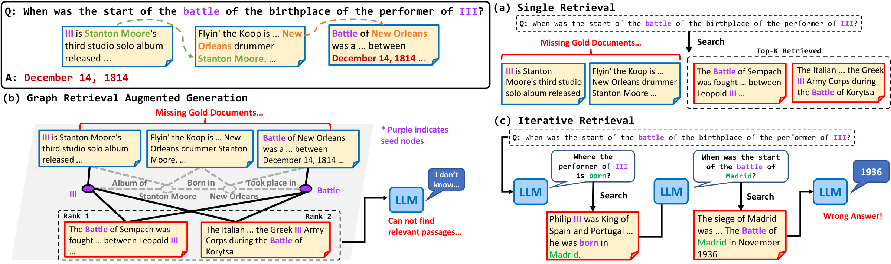
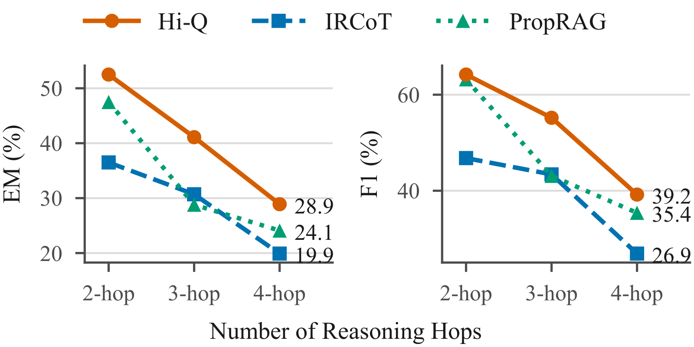

A central bottleneck in multi-hop question answering is that the granularity at which a question is expressed often differs from the granularity at which corpus evidence is retrievable. Existing methods address this mismatch by imposing fixed graph structures over the corpus, by iteratively reformulating the query, or by executing a generated program over it — but none of them explicitly decides when a query unit is already supported by evidence and when it should be refined.
We formulate this bottleneck as retrievable granularity discovery and introduce Hi-Q, an evidence-conditioned framework for hierarchical query refinement. At each query node, a resolution operator tests whether retrieved evidence supports the current query unit. Resolved nodes terminate; unresolved nodes are expanded by a dependency-preserving binary operator and checked by a semantic coverage verifier. Hi-Q therefore grows a query tree whose topology is determined by corpus support signals rather than by a fixed decomposition template or a pre-built graph.
“When was the start of the battle of the birthplace of the performer of III?”
III → Stanton Moore → New Orleans → Battle of New Orleans → December 14, 1814
Multi-hop RAG is the problem of finding the query unit at which a reasoning step becomes both retrievable and answerable under a given corpus — not the problem of producing a logically valid decomposition.
A node is expanded when the grounded reader cannot answer from what was retrieved. Nothing is trained for this; we show the choice is a cost-sensitive threshold on the probability that the node is unresolved.
Any policy that reads only the question carries a regret that no amount of query-only training data removes. A learned router of exactly that kind routes 959 of 1,000 questions the same way — and scores below a constant policy.
The facts needed for a multi-hop question sit in different documents at a fine grain, while the question arrives as a single coarse sentence. Too coarse and the retriever matches isolated terms; too fine and the query loses the constraints that made it answerable. The three failures below are all the same mismatch.

Returns passages matching “III” and “battle” separately — Leopold III at Sempach, the Greek III Army Corps at Korytsa — and none of the gold passages.
Enters a pre-built graph at surface-matched seeds. The traversal ranks those same two wrong passages first, so the reader abstains.
Asks for the performer's birthplace first, binds “III” to Philip III of Spain, and carries Madrid through every later step to answer 1936.
Hi-Q starts from the original question and attempts it at the granularity it arrives in. Only when the retrieved evidence fails to support that unit does it expand, and the expansion is ordered so that a prerequisite is resolved before whatever depends on it.
The resolution operator rewrites the current query from the accumulated history, retrieves the top-k passages, and has a grounded reader answer from them. If the reader answers, the node stops. If it abstains, the retrieved evidence does not jointly support this query unit and the node becomes eligible for refinement. Writing the two error costs — expanding a node that was already answerable, stopping at one that was not — turns the decision into a threshold on the probability that the node is unresolved.
An unresolved node is split into exactly two sub-queries: one that resolves the bridge fact, and one that uses that bridge to reach the parent's answer. Splitting in two restricts sequential depth rather than expressiveness — a plan with m leaf information needs is organized as at most m−1 binary reductions. The left branch runs first and its answer, evidence, and partial context enter the history before the right branch does, so a dependent sub-query is never retrieved against while still under-specified.
Before either sub-query is solved, a verifier checks that resolving them in order recovers the parent's intent without adding, omitting, or reordering constraints. One repair attempt is allowed; if the revised split is still inconsistent, the node is marked non-decomposable and that branch stops. Across datasets the verifier repairs 14.8–18.8% of triggered decompositions.
Our primary setting is full-corpus retrieval, where dependent evidence must be located among open-domain distractors rather than inside a small annotated pool of supporting and distractor passages. Reader is GPT-4o-mini; retriever is NV-Embed-v2 with k = 5.
| MuSiQue-full | 2Wiki-full | HotpotQA-full | ||||
|---|---|---|---|---|---|---|
| Method | EM | F1 | EM | F1 | EM | F1 |
| PropRAG graph | 25.8 | 38.6 | 52.1 | 59.3 | not reported | |
| Self-Ask iterative | 22.2 | 28.1 | 41.7 | 46.9 | 30.0 | 37.5 |
| Least-to-Most | 24.3 | 34.0 | 30.7 | 34.0 | 45.4 | 59.1 |
| IRCoT | 24.4 | 34.9 | 35.0 | 38.9 | 52.0 | 63.6 |
| Coding agent program | 16.8 | 29.6 | 16.5 | 34.7 | 31.1 | 47.1 |
| RLM | 19.6 | 29.1 | 34.0 | 41.6 | 30.1 | 41.1 |
| Hi-Q | 37.4 | 50.6 | 62.0 | 71.4 | 57.4 | 69.9 |
On 100 normal MuSiQue queries the false rejection rate is 11%, and every null output is attributable to missing or incomplete evidence rather than blind abstention. On 50 adversarially unanswerable queries Hi-Q identifies 49 as unanswerable, a 2% false acceptance rate. Replacing the trigger with an always-decompose policy costs 3.4 EM — which also bounds what any trigger error can cost, since always-decompose is the limiting case of over-triggering.

@article{kim2026hiq,
title = {Hi-Q: Hierarchical Evidence-guided Query Refinement
for Multi-Hop Question Answering},
author = {Kim, Jueun and Park, Sungho and Han, Wook-Shin},
journal = {arXiv preprint arXiv:2608.30468},
year = {2026}
}